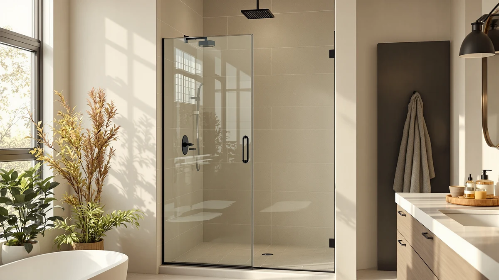

Shower Doors Sliders (2026)
Prices and picks verified as of October 2026. Independent, reader-supported reviews.


Quick Answer
Shower doors sliders range from budget semi-frameless designs under $270 to premium frameless stainless options near $500, and the right pick comes down to your opening's width and height more than price alone. Our top pick, the Aurisal Frameless Stainless Steel Sliding Shower, fits the most common 60 inch alcove with a fully frameless look at a mid-range price.
Our pick: Frameless Stainless Steel Sliding Shower, $389.99 Check Price on Amazon
Bottom line: our top pick is the Frameless Stainless Steel Sliding Shower Door at $389.99. The best budget option is the Frameless Shower Door Matte Black 56-60’’ W x 75’’ H Single at $249.30.
Things to Know Before You Buy
- Frameless costs more than semi-frameless. A true frameless design, like our stainless steel top pick, skips the metal edge trim entirely for a cleaner look, while semi-frameless doors keep a slim strip of framing and typically cost less.
- Measure your actual opening before you shop for shower doors sliders. Most sliding doors list an adjustable width range rather than a single fixed size, so a door rated for 56 to 60 inches will not necessarily fit a 54 inch opening.
- One panel always overlaps the other. Because a bypass door slides rather than swings, your real walk-in gap is only about half the total width, tighter than a hinged or pivot door of the same size.
- The bottom track collects water and soap scum. It is the one part of a sliding door that needs a regular wipe to keep gliding smoothly and resist mold.
- Tempered glass is heavy. Plan on a two-person install, especially for taller 75 to 76 inch panels like the KPUY and BoBliss picks below.
Shopping for shower doors sliders means wading through a lot of near-identical product photos and little solid information about what actually holds up in daily use. A sliding door lives on its track and rollers, not on the glass alone, and the failure points that frustrate owners after a year rarely show up in a listing photo. We compared seven frameless and semi-frameless sliding doors built for standard and oversized openings, from a $249 matte black pick to a $500 KPUY frameless unit, looking at size range, glass style, and what verified buyers say after months of use.
Our top pick is the Aurisal Frameless Stainless Steel Sliding Shower at $389.99. It pairs a frameless glass panel with a stainless steel track and handle, a look usually reserved for doors costing hundreds more, and a 60 by 72 and a quarter inch size that fits most standard alcoves without a custom order. If your opening runs taller, narrower, or you want a different finish, the six alternatives below cover matte black, double sliding, and semi-frameless options at other price points.
Every sliding shower door here is a real listing you can buy today, not a discontinued model padded into a top seven. We read the manufacturer specifications, checked each width and height range against common US shower openings, and cross-referenced verified buyer reviews for the complaints that matter most: rollers that jump the track, hardware that corrodes, and glass that arrives chipped. Prices below were accurate when we last checked and can shift with Amazon's own promotions.
Why You Should Trust Us
Best Shower Doors is written by Ilane Tall, who covers bathroom fixtures and renovation gear for a US audience. We do not own a test lab and we do not install these doors ourselves, so we do not claim to have used them. What we do is read the manufacturer specifications for every shower door slider in this guide, compare glass style, size range, and hardware finish, and check those claims against verified buyer reviews on Amazon. When reviewers report a recurring problem, such as rollers that derail or a bottom sweep that leaks, we note it.
We pull every price and dimension below directly from the product listing, and each one was accurate at the time of writing. Our goal is to help you pick a door that fits your opening and lasts, not the one with the biggest discount banner.
How We Picked
We started with sliding and bypass shower doors that sell in meaningful volume in the US, then narrowed the list. Every pick needed tempered safety glass, a documented adjustable width range so it could fit a slightly out-of-square opening, and a reversible design for either a left or right hand install. We dropped doors with a pattern of complaints about rollers jumping the track, bottom seals that leak, or hardware that pits within months.
From there we spread the picks across different situations instead of naming one universal winner. A narrow opening has different needs than a wide one, and a shared bathroom benefits from a different sliding mechanism than a single-user shower. So the seven shower doors sliders below cover a frameless stainless flagship, a tall 76 inch KPUY frameless door, a semi-frameless value pick, a double-sliding design for center access, a matte black finish, a BoBliss frameless option, and a second Aurisal listing for shoppers comparing price between the two.
How We Compared
Because a shower door is a fixed bathroom fixture rather than a gadget you can ship back and forth, our comparison is built on specifications and on the experience verified owners report, not a staged lab. For each of these shower doors sliders, we compared the width and height range against common US shower openings, the glass style (frameless versus semi-frameless), and the finish, from brushed stainless to matte black. We read through owner reviews specifically looking for the failure patterns that matter over years of use: rollers that jump the track, bottom sweeps that leak, and hardware that corrodes or pits.
We also weighed the two trade-offs that apply to every sliding door, the reduced walk-in opening from the overlapping panels and the bottom track that needs regular cleaning, and noted where a given design handles them better or worse than the rest of the lineup. The result favors doors that hold up in a wet, high-use bathroom rather than doors with the most dramatic product photography.
Our Picks

Frameless Stainless Steel Sliding Shower
What we like
- Frameless glass panel reads as a premium feature typically reserved for pricier doors
- Stainless steel track and handle resist the corrosion that chrome hardware shows over time in a humid bathroom
- 60 by 72 and 1/4 inch sizing covers the most common US alcove opening without custom fabrication
Flaws but not dealbreakers
- Fixed 60 inch sizing means it will not adapt to an opening outside that range
- Frameless doors generally cost more upfront than a semi-frameless or framed alternative
| Material | — |
| Size | 60"*72"-1/4" |
The Aurisal Frameless Stainless Steel Sliding Shower is our top pick among this year's shower doors sliders because it gets the look right without the usual premium price. The glass panel runs frameless from edge to edge, and the stainless steel track and handle give it a finished, built-in feel rather than a hardware-store add-on. At 60 inches wide by 72 and a quarter inches tall, it is sized for the single most common alcove opening in US bathrooms, which is why it tops our list instead of a door that needs a wider custom opening.
At $389.99 it sits in the middle of our price range, more than the matte black and ENSO SENKA budget picks but well under the KPUY and BoBliss doors above it. Reviewers consistently note that the glass arrives well packaged and that the hardware installs cleanly on a standard alcove, though as with any bypass door you should expect the usual half-width walk-in gap and a bottom track that needs an occasional wipe. For most 60 inch showers, it is the sliding door we would buy first.

KPUY Frameless Shower Door 55-60"
What we like
- Adjustable 55 to 60 inch width range fits openings that are slightly out of square
- 76 inch height is taller than most picks here, containing more splash and steam
- Frameless glass keeps the finished look consistent with our top pick
Flaws but not dealbreakers
- At $499.96 it is the most expensive door in this roundup
- The wider adjustable range adds a few more hardware pieces to align during install
| Material | — |
| Size | 55-60" W x 76" H |
The KPUY Frameless Shower Door is built for openings that do not sit at a perfectly standard width. Its 55 to 60 inch adjustable range gives installers room to work with a wall that is slightly out of square, and the 76 inch height is taller than every other door in this guide, which means less steam and splash escaping over the top in a tall shower.
That flexibility and height come at a cost: at $499.96, the KPUY is the priciest shower door slider we compared. Owners researching this door report that the extra adjustment range makes it forgiving during a tricky install, but the frameless glass still needs the same two-person lift as any tempered panel this size. If your opening is a non-standard width or your ceiling is tall, the premium is easier to justify than it would be on a standard 72 inch alcove.

ENSO SENKA 56-60" W x
What we like
- Semi-frameless construction gives most of the clean glass look for less money
- Fits the common 56 to 60 inch opening width
- Under $270 makes it one of the better values among shower doors sliders this year
Flaws but not dealbreakers
- Visible edge framing is a step down from a true frameless panel up close
- Standard 72 inch height holds back a little less splash than the taller picks
| Material | — |
| Size | 60" W X 72" H |
The ENSO SENKA earns its spot by splitting the difference between price and looks. Semi-frameless construction keeps a slim strip of framing along the outer edges while leaving the main span of glass open, so from across the bathroom it reads as close to frameless. At under $270 for a 56 to 60 inch bypass door, it costs significantly less than the fully frameless options in this guide.
The trade-off shows up only up close, where the edge framing is visible if you go looking for it, and at 72 inches tall it contains slightly less splash than the 75 to 76 inch doors above. Reviewers researching this size range describe it as straightforward to install and a good fit for a standard alcove. For a shopper comparing shower doors sliders on a budget, it is the semi-frameless option worth checking before stepping up to a pricier frameless panel.

Frameless Shower Door Matte Black
What we like
- Matte black finish matches the black fixtures common in newer bathroom remodels
- Lowest price in this roundup at $249.30
- Frameless glass panel despite the budget price point
Flaws but not dealbreakers
- Matte black finishes tend to show hard water spotting more visibly than chrome or stainless
- Single sliding design, so only one panel moves rather than both
| Material | — |
| Size | 60" W x 75" H Single Sliding |
If your bathroom is built around black fixtures, the Ogonbrick Frameless Shower Door Matte Black is the obvious pick among this year's shower doors sliders. It is frameless, it is sized for a standard 60 inch by 75 inch opening, and at $249.30 it is the least expensive door we compared, undercutting even the semi-frameless ENSO SENKA.
The finish is the one thing to manage over time. Matte black hardware tends to show hard water spots and soap residue more obviously than a lighter chrome or stainless finish, so plan on wiping it down more often than you would a brighter metal. It is also a single sliding design rather than double sliding, meaning one panel stays fixed while the other moves. For a budget frameless door in a black-fixture bathroom, nothing else here matches the price.

GETPRO Shower Door Double Sliding
What we like
- Double-sliding panels let you open the shower from either the left or right side
- Standard 60 by 72 inch sizing fits the most common opening
- Priced at $260.07, among the lower end of this roundup
Flaws but not dealbreakers
- Two moving panels mean two sets of rollers and tracks to keep clean instead of one
- Not a frameless design, so the look is less minimal than our top picks
| Material | — |
| Size | 60'' W x 72'' H |
Most of the shower doors sliders in this guide use a single-bypass design, where one panel slides over a second panel that stays fixed. The GETPRO Shower Door Double Sliding does it differently: both panels move, so anyone can open the shower from whichever side is more convenient. In a bathroom two people share on different schedules, that flexibility matters more than a frameless finish.
At $260.07 for a standard 60 by 72 inch opening, it is priced competitively with the other mid-range picks here. The trade-off for the dual-panel design is more hardware to maintain: two tracks and two sets of rollers instead of one, so the bottom rail needs slightly more attention to stay clear of soap scum. For a shared bathroom where single-side access is a daily annoyance, that extra cleaning is a reasonable price to pay.

BoBliss Frameless Sliding Glass Shower
What we like
- Frameless glass across a tall 76 inch height contains more steam than standard 72 inch doors
- Adjustable 56 to 60 inch width accommodates a slightly uneven opening
- Finished look comparable to our top Aurisal pick
Flaws but not dealbreakers
- At $429.99 it costs more than most of the other frameless options here
- Taller panels are heavier and need careful handling during a two-person install
| Material | — |
| Size | 56-60" W x 76" H |
The BoBliss Frameless Sliding Glass Shower pairs the frameless look of our top pick with the extra height of the KPUY, covering a 56 to 60 inch width and a tall 76 inches top to bottom. For a shower with a higher ceiling, that extra height keeps more steam and splash contained than the standard 72 inch doors in this guide.
At $429.99, it lands between the mid-priced ENSO SENKA and matte black picks and the pricier KPUY. Shoppers researching tall frameless doors note that the adjustable width range helps it settle into a slightly out-of-square opening, though the taller glass panel is noticeably heavier to maneuver during install than the standard 72 inch doors. If your alcove runs tall and you want frameless glass rather than semi-frameless, this is the door to check first.

Frameless Stainless Steel Sliding Shower
What we like
- Same frameless glass and stainless steel hardware as our top Aurisal pick
- 60 by 72 and 1/4 inch sizing matches the most common alcove opening
- Useful alternate listing if our top pick is temporarily out of stock
Flaws but not dealbreakers
- Priced $10 higher than the other Aurisal listing in this guide
- No meaningful design difference from our top pick, so there is little reason to choose it when both are in stock
| Material | — |
| Size | 60"*72"-1/4" |
This second Aurisal Frameless Stainless Steel Sliding Shower is effectively the same door as our top pick: frameless glass, a stainless steel track and handle, and the same 60 by 72 and 1/4 inch sizing for a standard alcove. It shows up here because Amazon lists it separately from our top pick, and pricing between the two listings shifts independently.
At $399.99, it currently runs $10 above the other Aurisal listing, so we would default to whichever listing is cheaper on the day you are shopping for shower doors sliders in this size. Keep both in mind as a pair: if one goes out of stock or jumps in price, the other is a direct substitute with no real difference in design or quality.
Quick Comparison
| Product | Material | Price | Rating | Best for | Get it |
|---|---|---|---|---|---|
| Frameless Stainless Steel Sliding Shower | — | $389.99 | 4 | Standard 60 in. sliding-door alcoves wanting a frameless look | View on Amazon → |
| KPUY Frameless Shower Door 55-60" | — | $499.96 | 4 | Tall 76 in. openings needing extra width adjustment | View on Amazon → |
| ENSO SENKA 56-60" W x | — | $269.99 | 4 | Standard openings on a semi-frameless budget | View on Amazon → |
| Frameless Shower Door Matte Black | — | $249.30 | 4 | Black-fixture bathrooms on the lowest budget | View on Amazon → |
| GETPRO Shower Door Double Sliding | — | $260.07 | 4 | Shared bathrooms needing double-sided access | View on Amazon → |
| BoBliss Frameless Sliding Glass Shower | — | $429.99 | 4 | Tall 76 in. openings wanting fully frameless glass | View on Amazon → |
| Frameless Stainless Steel Sliding Shower | — | $399.99 | 4 | Backup listing for the same Aurisal frameless design | View on Amazon → |
The Competition
A few other door styles came up during our research but did not make the final seven. Fully framed sliding doors are usually the cheapest option on Amazon, and if price is your only concern they work, but the thick metal frame around every pane looks dated next to a frameless or semi-frameless panel, and the extra framing traps even more grime in the corners than a standard bottom track. We pointed you toward the ENSO SENKA and matte black picks above instead.
Pivot and hinged doors can open to a wider, uninterrupted gap because there is no overlapping panel eating into the width, but they need a clear arc of floor space to swing into. In the alcoves and tub conversions these doors are built for, that space usually is not available, which is the entire reason to shop for shower doors sliders in the first place rather than a hinged design.
Curved and neo-angle sliding units for corner showers are a legitimate category, but they are sized for a specific corner footprint rather than a straight alcove, so they are not interchangeable with anything in this roundup. If your shower is a corner install, shop that category directly.
Across all seven, the Aurisal Frameless Stainless Steel Sliding Shower remains our top recommendation for anyone comparing shower doors sliders for a standard 60 inch opening, with the matte black Ogonbrick and semi-frameless ENSO SENKA as the picks to check first on a tighter budget.
What these prices have actually done
We check the price of every product on this page every hour and keep the record. These figures are observations, not estimates or forecasts.
- KPUY Frameless Shower Door has ranged from $424.97 to $499.96 across 25 hourly price checks since September 27, 2026. It was $499.96 at the last check.
- ENSO SENKA 56-60" W x 72" H Semi-Frameless Bypass Sliding Shower Door has ranged from $251.99 to $269.99 across 23 hourly price checks since September 27, 2026. It was $251.99 at the last check.
- GETPRO Shower Door Double Sliding 57-60 in. W x 72 in. H has ranged from $260.07 to $273.76 across 22 hourly price checks since September 27, 2026. It was $260.07 at the last check.
- BoBliss Frameless Sliding Glass Shower Door has ranged from $419.99 to $439.99 across 26 hourly price checks since September 27, 2026. It was $429.99 at the last check.
Last updated October 26, 2026. Amazon prices change constantly; the figure you see on Amazon right now is the one that counts.
Frequently Asked Questions
What is the difference between frameless and semi-frameless sliding shower doors?
Frameless doors, like our Aurisal top pick, skip the metal trim around the glass entirely for the cleanest look. Semi-frameless doors, like the ENSO SENKA in this guide, keep a slim strip of framing along the outer edges, which costs less but is visible up close. Both designs use the same tempered safety glass underneath.
How much space do shower doors sliders actually save?
The main saving is swing clearance, not floor space inside the shower. Because the panels glide on a track instead of swinging outward, a sliding door needs zero clearance in front of the shower, which is why they fit alcoves and tub conversions where a pivot door could not physically open. The trade-off is that one panel overlaps the other, so your walk-in gap is only about half the total width.
Can I install a sliding shower door myself?
Many homeowners do, but it is rarely a one-person job. Every door in this guide lists an adjustable width range and is reversible for a left or right hand opening, which helps with a slightly out-of-square wall, but tempered glass panels are heavy, especially the taller 75 to 76 inch options like the KPUY and BoBliss. Plan on a second person to help hold the glass while you set the track and rollers.
Why does the bottom track need so much cleaning?
The track is what lets the panels glide, and that same design traps water, soap scum, and hair at the bottom of every sliding door we compared. A weekly wipe keeps it moving smoothly and keeps mold from building up. Double-sliding doors, like the GETPRO pick here, have two tracks instead of one, so they need a little more attention.
Which shower doors sliders in this guide cost the least?
The Ogonbrick Frameless Shower Door Matte Black is the least expensive pick at $249.30, followed by the ENSO SENKA at $269.99 and the GETPRO double-sliding door at $260.07. All three are legitimate value options, and the matte black pick is frameless despite its price, which is unusual at that end of the market.